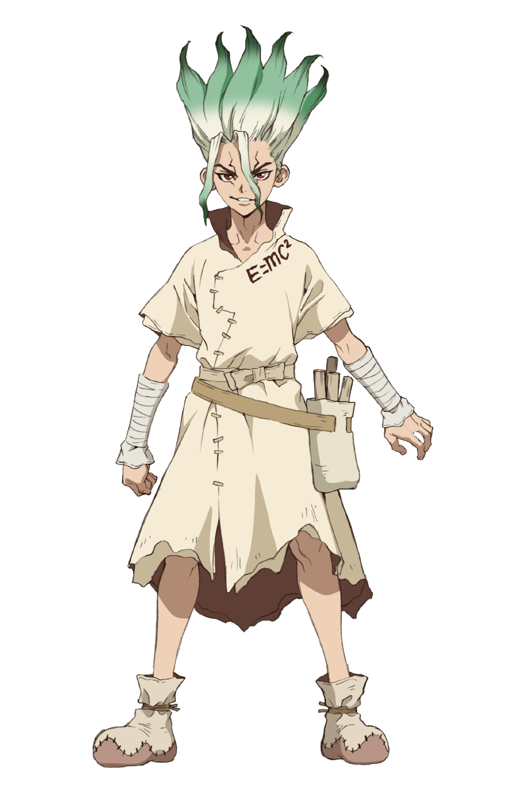

Кто это?
Исигами Сенку — главный герой "Доктора Стоуна". Он дружит с Тайджу и Юзурихой. Сенку известен своими крылатыми фразами, одной из которых является «Десять миллиардов процентов». Он вышел из окаменения за полгода до Тайджу(все люди на земле превратились в камень на 3000лет!), и в конечном итоге с помощью Тайджу создал каменную формулу, которая обращает статуи обратно в людей. В каменном мире Сенку хочет восстановить цивилизацию и создать Царство Науки.(слева катринка с его участием)
ХарактеристикиСпасибо за внимание!
Ждите обновления сайта :)